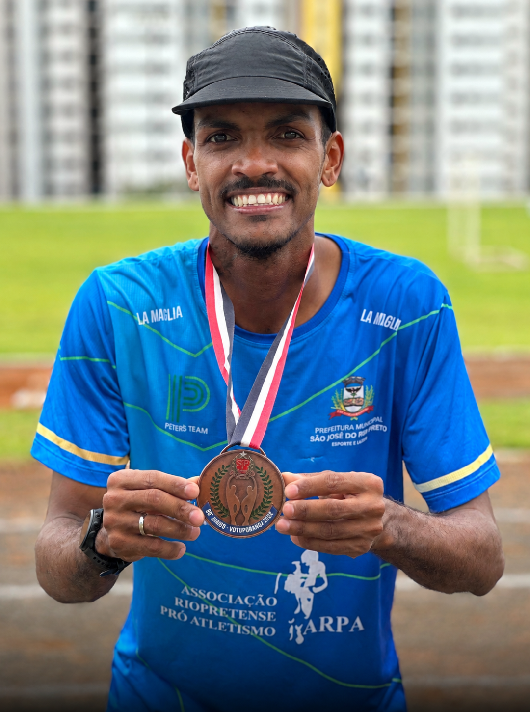

23 DE OUTUBRO
Festa do Dia das Crianças
Um dia especial para celebrar a alegria, a amizade e cada pequena grande conquista dos nossos atletas.
↗Atletismo para crianças, adolescentes e atletas de alto rendimento. Uma história de dedicação ao esporte que começou em 1971.

PROJETO DE INICIAÇÃO
O projeto da ARPA-RP abre as portas do atletismo para crianças a partir de 5 anos e adolescentes. Com aulas lúdicas, acompanhamento próximo e muita energia, cada treino transforma movimento em confiança.
Para os adolescentes atletas de elite, os treinos acontecem às terças e quintas-feiras, das 17h30 às 21h.
ACOMPANHE A NOSSA JORNADA
Histórias, encontros e conquistas
que fazem a diferença.
23 DE OUTUBRO
Um dia especial para celebrar a alegria, a amizade e cada pequena grande conquista dos nossos atletas.
↗
COMUNIDADE ARPA-RP
Encerramos mais uma temporada com gratidão, integração e muita celebração junto das famílias.
↗
TREINOS E COMPETIÇÕES
Rotina, dedicação e espírito de equipe: nossos atletas seguem treinando para novos desafios.
↗
12 DE OUTUBRO
Jeovane da Rocha conquistou a medalha de bronze nos 1.500 metros masculino no dia 12 de outubro, nos Jogos Abertos do Interior!
QUEM FAZ ACONTECER

COORDENADOR E TREINADOR

DIRETOR

DIRETOR

FILMMAKER

FILMMAKER
QUEM CAMINHA COM A GENTE
VENHA NOS VISITAR
Centro Esportivo do Eldorado
Rua Três Lagoas, 722 — esquina com Rua Nova Granada
Bairro Eldorado · São José do Rio Preto — SP
Um espaço para descobrir a força do seu movimento.
PRONTO PARA COMEÇAR?
Chame no nosso WhatsApp e venha fazer parte da ARPA-RP.